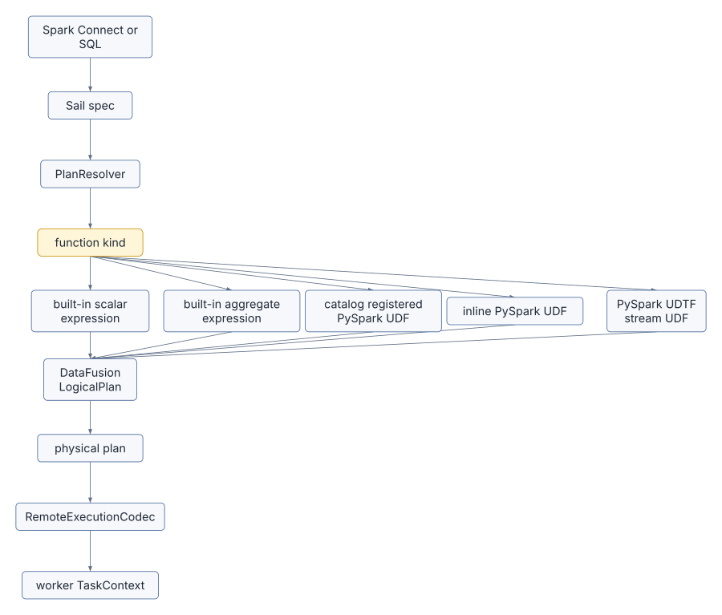
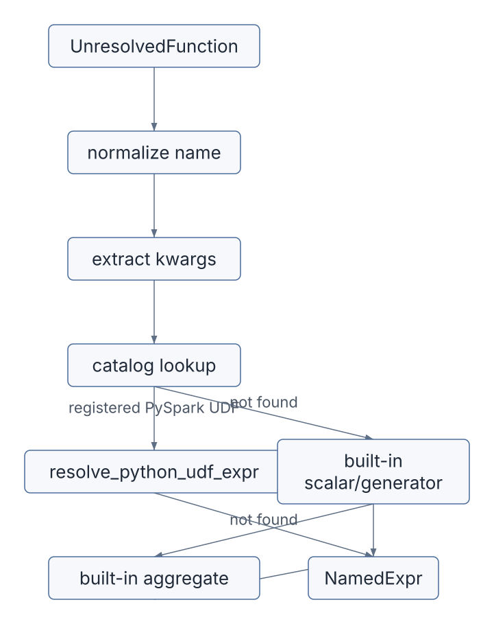
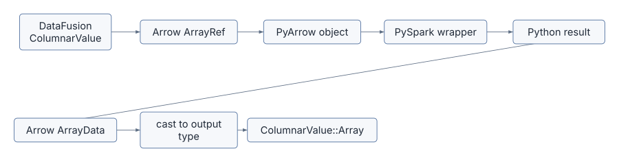
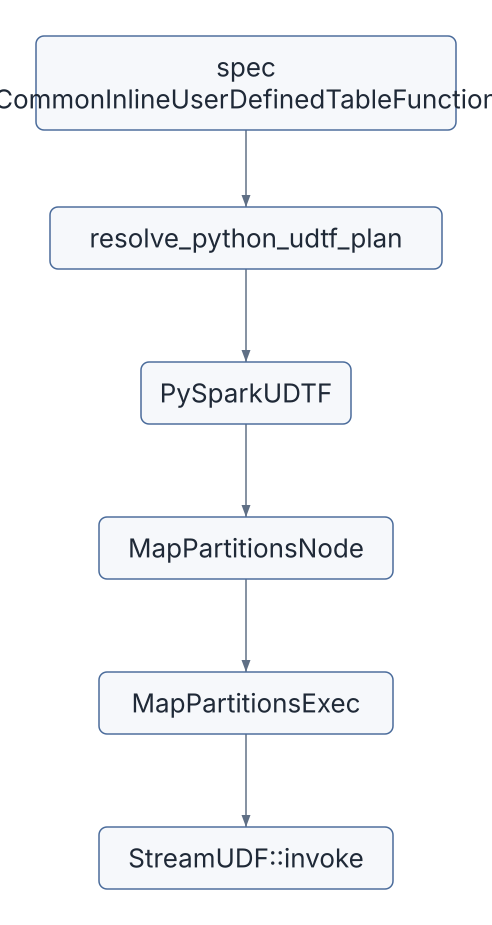
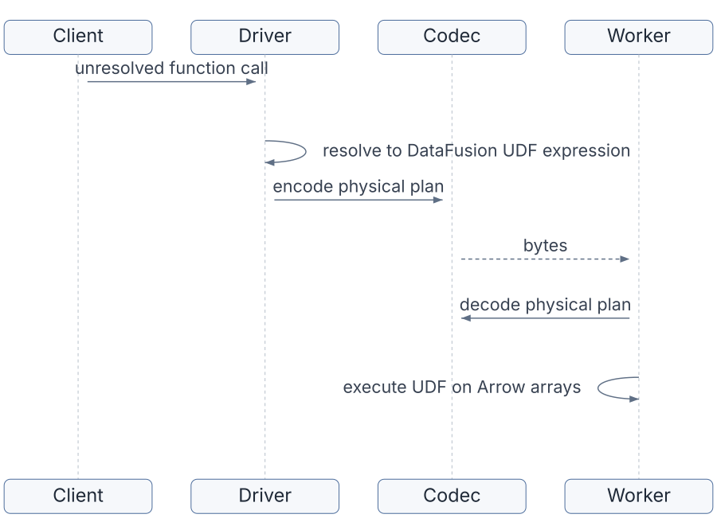
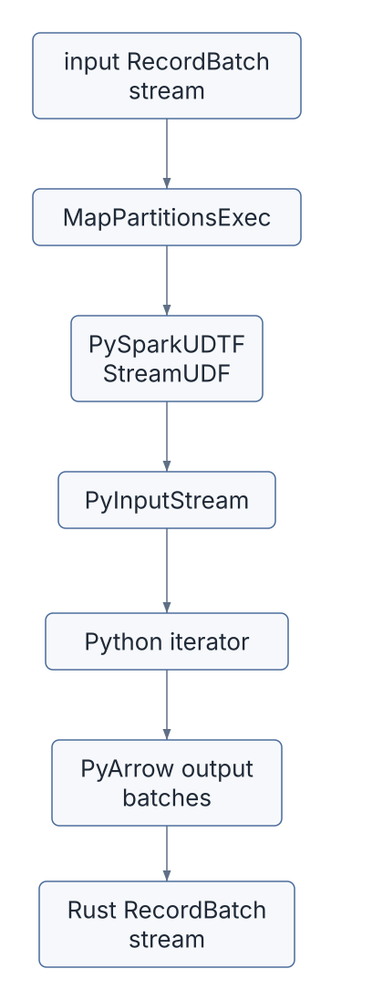

A function call looks small in a query:
SELECT lower(name), my_python_udf(amount)
FROM ordersInside a distributed engine, that little expression is a contract.
The driver must resolve the function name. The logical plan must carry the right DataFusion expression. The physical plan must know how to execute it. If the query runs on workers, the function implementation and all of its parameters must survive serialization. If the function is a Python UDF, the worker must also reconstruct a PySpark-compatible payload and call Python with Arrow data in the right shape.
This chapter is about that contract.
Sail’s function architecture spans four layers:
spec::Expr / spec::CommandNode
-> PlanResolver function logic
-> DataFusion UDF/UDAF/window/stream objects
-> RemoteExecutionCodec for worker executionThat makes functions one of the best places to understand why extension proposal #2001 is not just about registering names. Distributed extensions must be resolvable, plannable, serializable, decodable, and executable everywhere the query can run.
The main files for this chapter are:
| Concern | File |
|---|---|
| Spec representation of UDFs and UDTFs | crates/sail-common/src/spec/expression.rs |
| Built-in function registry | crates/sail-plan/src/function/mod.rs |
| Built-in scalar groups | crates/sail-plan/src/function/scalar/mod.rs |
| Built-in aggregate functions | crates/sail-plan/src/function/aggregate.rs |
| Built-in table functions | crates/sail-plan/src/function/table/mod.rs |
| Function expression resolution | crates/sail-plan/src/resolver/expression/function.rs |
| Inline Python UDF resolution | crates/sail-plan/src/resolver/expression/udf.rs |
| Function registration commands | crates/sail-plan/src/resolver/command/function.rs |
| UDTF resolution | crates/sail-plan/src/resolver/query/udtf.rs |
| Catalog function storage | crates/sail-catalog/src/manager/function.rs |
| Stream UDF trait | crates/sail-common-datafusion/src/udf.rs |
| Map partitions physical operator | crates/sail-physical-plan/src/map_partitions.rs |
| PySpark scalar UDF implementation | crates/sail-python-udf/src/udf/pyspark_udf.rs |
| PySpark aggregate UDF implementation | crates/sail-python-udf/src/udf/pyspark_udaf.rs |
| PySpark UDTF implementation | crates/sail-python-udf/src/udf/pyspark_udtf.rs |
| PySpark payload building | crates/sail-python-udf/src/cereal/pyspark_udf.rs |
| PySpark stream bridge | crates/sail-python-udf/src/stream.rs |
| Remote execution codec | crates/sail-execution/src/codec.rs |
| Codec protobuf schema | crates/sail-execution/proto/sail/plan/physical.proto |
| Server session setup | crates/sail-session/src/session_factory/server.rs |
| Worker session setup | crates/sail-session/src/session_factory/worker.rs |
A function in Sail can enter from several front doors:
UnresolvedFunction,All of those eventually need to become DataFusion expressions or Sail physical operators.
The lifecycle looks like this:

The key point is that the resolver does not execute functions. It builds objects that DataFusion and Sail can execute later.
The spec layer models inline user-defined functions in
crates/sail-common/src/spec/expression.rs.
Scalar UDFs use:
pub struct CommonInlineUserDefinedFunction {
pub function_name: Identifier,
pub deterministic: bool,
pub is_distinct: bool,
pub arguments: Vec<Expr>,
pub function: FunctionDefinition,
}The function definition can be:
pub enum FunctionDefinition {
PythonUdf {
output_type: DataType,
eval_type: PySparkUdfType,
command: Vec<u8>,
python_version: String,
additional_includes: Vec<String>,
},
ScalarScalaUdf { ... },
JavaUdf { ... },
}Table functions use:
pub struct CommonInlineUserDefinedTableFunction {
pub function_name: Identifier,
pub deterministic: bool,
pub arguments: Vec<Expr>,
pub function: TableFunctionDefinition,
}Today, the table function definition is Python-specific:
pub enum TableFunctionDefinition {
PythonUdtf {
return_type: Option<DataType>,
eval_type: PySparkUdfType,
command: Vec<u8>,
python_version: String,
},
}The command: Vec<u8> field is the serialized
Python payload from PySpark. Sail treats it as opaque bytes until it is
time to construct a PySpark worker-compatible payload.
The PySparkUdfType enum mirrors PySpark evaluation
modes:
Batched
ArrowBatched
ScalarPandas
GroupedAggPandas
ScalarPandasIter
ScalarArrow
ScalarArrowIter
GroupedAggArrow
Table
ArrowTable
ArrowUdtf
...Different evaluation types imply different execution shapes:
| Eval type family | Sail execution shape |
|---|---|
| Scalar batch UDF | DataFusion ScalarUDFImpl |
| Scalar Pandas or Arrow UDF | DataFusion ScalarUDFImpl with Python bridge |
| Grouped aggregate UDF | DataFusion AggregateUDFImpl |
| Map iterator UDF | Sail StreamUDF through
MapPartitionsExec |
| UDTF | Sail StreamUDF through
MapPartitionsExec |
This is why the function type must be explicit in the spec. The same surface concept, “a Python function,” can require very different execution machinery.
Sail’s built-in Spark-compatible functions are registered in static
maps in crates/sail-plan/src/function/mod.rs.
lazy_static! {
pub static ref BUILT_IN_SCALAR_FUNCTIONS: HashMap<&'static str, ScalarFunction> =
HashMap::from_iter(scalar::list_built_in_scalar_functions());
pub static ref BUILT_IN_GENERATOR_FUNCTIONS: HashMap<&'static str, ScalarFunction> =
HashMap::from_iter(generator::list_built_in_generator_functions());
pub static ref BUILT_IN_TABLE_FUNCTIONS: HashMap<&'static str, Arc<TableFunction>> =
HashMap::from_iter(table::list_built_in_table_functions());
}The scalar registry is assembled from many focused modules:
array
bitwise
collection
conditional
conversion
csv
datetime
geo
hash
json
lambda
map
math
misc
predicate
string
struct
url
variant
xmlThis layout is worth copying in your mental model. There is no single monstrous function resolver where every implementation lives. Instead:
sail-plan maps Spark-compatible names to expression
builders.sail-function implements many custom DataFusion UDFs
and UDAFs.datafusion-spark and DataFusion built-ins provide
additional behavior.sail-python-udf implements Python-backed
functions.The aggregate registry works similarly, but aggregate functions often have to adapt Spark syntax to DataFusion’s expected function shape.
For example, Spark’s ordered-set syntax:
percentile_cont(0.5) WITHIN GROUP (ORDER BY col)does not arrive in the same argument order DataFusion expects. Sail’s aggregate resolver extracts the ordered column and percentile argument, then builds the DataFusion aggregate expression.
That pattern is common: Sail preserves Spark semantics while targeting DataFusion’s execution model.
Function calls are resolved in:
crates/sail-plan/src/resolver/expression/function.rsThe core method is:
resolve_expression_function(...)The resolution order is deliberate:
NamedArgument
expressions.CatalogManager for registered functions.PlanService.The catalog check happens before built-ins because Spark Connect does
not reliably set the is_user_defined_function flag. Sail
chooses the behavior users expect: if a function was registered by name,
it should be found.

This is also where Sail handles Spark-specific display names. The expression object is DataFusion-compatible, but the output name should still look like Spark.
Registration commands are handled in:
crates/sail-plan/src/resolver/command/function.rsFor a scalar Python UDF registration, Sail:
PySparkUnresolvedUDF.CatalogManager.Conceptually:
RegisterFunction command
-> PySparkUnresolvedUDF
-> CatalogManager::track_function
-> CatalogCommand::RegisterFunctionCatalogManager stores functions case-insensitively:
fn canonical_function_name(name: &str) -> Arc<str> {
name.to_ascii_lowercase().into()
}When the query later calls that name, the expression resolver finds it in the catalog and creates the real executable UDF expression with the correct input types.
That two-step model matters:
You need both to build the runtime payload.
Spark Connect can also carry a UDF inline inside an expression:
spec::Expr::CommonInlineUserDefinedFunctionThat path is handled by:
crates/sail-plan/src/resolver/expression/udf.rsThe resolver:
The payload build step is the heart of the integration:
let payload = PySparkUdfPayload::build(
&function.python_version,
&function.command,
function.eval_type,
&arg_offsets,
&input_types,
kwarg_names,
&self.config.pyspark_udf_config,
)?;The output depends on the PySpark eval type.
| PySpark eval type | Sail object |
|---|---|
Batched |
PySparkUDF with PySparkUdfKind::Batch |
ArrowBatched |
PySparkUDF with
PySparkUdfKind::ArrowBatch |
ScalarPandas |
PySparkUDF with
PySparkUdfKind::ScalarPandas |
ScalarPandasIter |
PySparkUDF with
PySparkUdfKind::ScalarPandasIter |
ScalarArrow |
PySparkUDF with
PySparkUdfKind::ScalarArrow |
ScalarArrowIter |
PySparkUDF with
PySparkUdfKind::ScalarArrowIter |
GroupedAggPandas |
PySparkGroupAggregateUDF with Pandas mode |
GroupedAggArrow |
PySparkGroupAggregateUDF with Arrow mode |
Unsupported eval types are rejected early if they do not make sense for a scalar inline UDF.
The executable scalar UDF object is PySparkUDF in:
crates/sail-python-udf/src/udf/pyspark_udf.rsIt implements DataFusion’s ScalarUDFImpl.
Its fields include:
kind: PySparkUdfKind,
name: String,
payload: Vec<u8>,
deterministic: bool,
input_types: Vec<DataType>,
output_type: DataType,
config: Arc<PySparkUdfConfig>,
udf: LazyPyObject,The LazyPyObject is important. The Python callable is
not eagerly loaded when the plan is built. It is loaded when the UDF is
invoked:
payload bytes
-> PySparkUdfPayload::load
-> PySpark read_udfs
-> PySpark wrapper functionAt execution time, invoke_with_args():
ColumnarValue inputs into Arrow
arrays.ArrayData.ColumnarValue::Array.
This is the practical meaning of “Arrow UDF” in Sail. Arrow is the boundary format between Rust execution and Python execution.
Grouped aggregate UDFs use:
crates/sail-python-udf/src/udf/pyspark_udaf.rsThe central object is PySparkGroupAggregateUDF, which
implements AggregateUDFImpl.
It supports two modes:
pub enum PySparkGroupAggKind {
Pandas,
Arrow,
}The accumulator path is important. DataFusion aggregate functions do
not call a scalar function once per input batch. They create
accumulators. Sail uses BatchAggregateAccumulator with a
BatchAggregator implementation that calls Python over
collected Arrow arrays.
The resolver also enforces a Spark analysis rule: aggregate UDF arguments cannot contain nested aggregate functions.
There is another small but revealing workaround: DataFusion requires
at least one input to an aggregate function. For a zero-argument Python
aggregate UDF, Sail injects a dummy Int64 literal and
records the actual argument count separately so the Python function
still receives the right argument list.
That is the kind of adapter code a compatibility engine accumulates. DataFusion and Spark are close enough to compose, but not identical.
Python table functions are not scalar expressions. They take input rows or batches and emit zero or more output rows. Sail models them as stream transformations.
The common trait is:
pub trait StreamUDF: DynObject + Debug + Send + Sync {
fn name(&self) -> &str;
fn output_schema(&self) -> SchemaRef;
fn invoke(&self, input: SendableRecordBatchStream) -> Result<SendableRecordBatchStream>;
}That trait lives in:
crates/sail-common-datafusion/src/udf.rsPySparkUDTF implements StreamUDF in:
crates/sail-python-udf/src/udf/pyspark_udtf.rsThe resolver creates a MapPartitionsNode, which the
physical planner turns into MapPartitionsExec.

MapPartitionsExec is simple:
RecordBatch stream to the
StreamUDF.That is exactly the right abstraction for UDTFs. A UDTF is not “one input value -> one output value.” It is “one stream partition -> another stream partition.”
The stream bridge lives in:
crates/sail-python-udf/src/stream.rsPyMapStream converts a Rust RecordBatch
stream into a Python iterator of PyArrow batches, then converts the
Python output iterator back into a Rust RecordBatch
stream.
The bridge uses a separate thread:
Rust input stream
-> PyInputStream.__next__
-> Python function iterator
-> output channel
-> Rust RecordBatchStreamThe separate thread exists because the Python iterator performs blocking calls into a Tokio stream. The bridge uses a stop signal so the Rust side can tell the Python input iterator to stop.
The output path:
RecordBatch.This is a useful pattern for any extension that needs to cross a runtime boundary: make the boundary stream-shaped, schema-aware, and cancellation-aware.
So far, we have talked about resolving and executing functions in one process. But Sail has a distributed runtime. The driver builds a physical plan. Workers execute tasks. Workers must reconstruct every custom physical plan node and every custom function that appears inside physical expressions.
That is the job of RemoteExecutionCodec:
crates/sail-execution/src/codec.rsIt implements DataFusion’s PhysicalExtensionCodec.
The codec handles:
The protobuf definitions live in:
crates/sail-execution/proto/sail/plan/physical.protoThe file starts with a telling comment: DataFusion data structures are often stored as opaque bytes because DataFusion’s protobuf definitions can change. Sail uses its own extended protobuf messages for Sail-specific nodes and wraps DataFusion’s protobuf encoding where needed.
Scalar UDF encoding happens in try_encode_udf().
The current design has two broad paths:
StandardUdf.Examples of stateful scalar UDF variants:
PySparkUdf
PySparkCoGroupMapUdf
DropStructFieldUdf
ExplodeUdf
SparkUnixTimestampUdf
StructFunctionUdf
ArraysZipUdf
UpdateStructFieldUdf
TimestampNowUdf
SparkTimestampUdf
SparkDateUdf
SparkFromCsvUdf
SparkFromJsonUdf
...For PySparkUDF, the codec stores:
kind
name
payload
deterministic
input_types
output_type
configThat is enough for a worker to reconstruct:
PySparkUDF::new(
kind,
name,
payload,
deterministic,
input_types,
output_type,
Arc::new(config),
)For a UDF like StructFunction, the codec only needs the
field names. For a UDF like SparkTimestamp, it needs
timezone and is_try. The encoding shape follows the state
needed to reconstruct the function.
Decoding happens in try_decode_udf().
The codec receives a function name and an extension buffer. If the
extension buffer is StandardUdf, it reconstructs the
function by matching on the name:
"spark_array" -> SparkArray::new()
"spark_split" -> SparkSplit::new()
"spark_xxhash64" -> SparkXxhash64::new()
...If the buffer contains a richer variant, the codec decodes the fields and constructs the object directly.
That distinction is a bit manual today. The code even has a TODO:
Implement custom registry to avoid codec for built-in functionsThis is another bright signpost for discussion #2001. A third-party
extension should not need to patch a giant match statement in
RemoteExecutionCodec just to make a custom function work on
workers.
Aggregate UDFs follow the same idea.
Known standard aggregate UDFs encode as:
StandardUdafThen the worker decodes by name:
bitmap_and_agg
histogram_numeric
kurtosis
max_by
mode
percentile
product
try_avg
try_sum
...Python grouped aggregate UDFs carry their payload, input names, input types, output type, deterministic flag, kind, config, and actual argument count.
Window UDF support is narrower. The codec has
ExtendedWindowUdf, and currently the standard custom path
includes ntile through SparkNtile.
The broader lesson is the same: every non-standard callable object needs a worker-side reconstruction story.
Stream UDFs are not DataFusion scalar expressions, so they have their own codec path:
fn try_encode_stream_udf(&self, udf: &dyn StreamUDF) -> Result<ExtendedStreamUdf>
fn try_decode_stream_udf(&self, udf: ExtendedStreamUdf) -> Result<Arc<dyn StreamUDF>>The current variants include:
PySparkMapIterUdf
PySparkUdtfFor PySparkUDTF, the codec stores:
kind
name
payload
input_names
input_types
passthrough_columns
function_return_type
function_output_names
deterministic
configThat mirrors the constructor for
PySparkUDTF::try_new().
This design is clean in one important way: stream UDFs are encoded
with the physical operator that uses them.
MapPartitionsExec does not need to know how a Python UDTF
works. It only needs a StreamUDF.
The server session factory deliberately does not add all DataFusion default features:
We do not add default features to the session state,
since we manage table formats and functions ourselves.But the worker session factory does add default features:
We still add default features for the worker session
since we need built-in functions to be available for the codec
when decoding the execution plan.That comment is small but important. It tells us that decoding a
physical plan is not only a bytes-to-struct operation. It may depend on
what functions and features are registered in the worker’s
SessionState.
This is one of the hard requirements for extensions:
The driver and every worker must agree on the callable universe.If the driver can plan a function the worker cannot decode, the query fails at task startup. If the worker can decode but not execute the function, the query fails during batch execution.
Consider:
SELECT xxhash64(customer_id)
FROM ordersThe path is:
spec::Expr::UnresolvedFunction.RemoteExecutionCodec.The function itself may feel local, but in cluster mode it has to survive this trip:

Now consider:
@udf("long")
def plus_one(x):
return x + 1
df.select(plus_one("amount"))The path is richer:
CommonInlineUserDefinedFunction.PySparkUdfPayload::build() writes a PySpark-compatible
payload:
PySparkUDF.PySparkUDF.That is a lot of machinery, but each part has a job:
spec -> preserve user intent and Python command
resolver -> bind arguments and types
UDF object -> implement DataFusion execution
codec -> move the object to workers
Python -> run user code over Arrow-shaped dataA UDTF is stream-shaped:
class SplitWords:
def eval(self, text):
for word in text.split():
yield (word,)The Sail path is:
analyze method during query analysis.PySparkUdtfPayload.PySparkUDTF stream UDF.MapPartitionsNode.MapPartitionsExec.MapPartitionsExec and
PySparkUDTF.RecordBatch streams.Diagram:

This is the same distributed principle again: the operator and the callable object must both be serializable.
RemoteExecutionCodec is not glamorous code, but it is
the backbone of cluster execution.
It teaches several lessons:
First, function identity is not enough. Some functions need state:
Second, the worker must reconstruct the same behavior, not merely a function with the same name.
Third, built-ins and extensions need different handling. Built-ins can sometimes be reconstructed by name. Extension functions need explicit registration and encoding.
Fourth, codecs are versioned contracts even when no version field is visible. If you change a function’s fields, you have changed the bytes a worker expects.
Fifth, DataFusion’s extension codec hooks are exactly the right place to integrate custom behavior, but Sail needs a registry around them to avoid central matches.
For discussion #2001, functions and codecs expose the sharpest edge of the design.
A third-party extension may want to add:
To work in local mode, registering a DataFusion UDF may be enough.
To work in cluster mode, that is not enough.
A distributed extension needs:
| Need | Why |
|---|---|
| Logical name registration | So the resolver can bind function calls. |
| Type inference | So the logical plan can be checked and named. |
| Execution implementation | So DataFusion can evaluate the function. |
| Physical encoding | So the driver can serialize plans. |
| Physical decoding | So workers can reconstruct plans. |
| Worker installation | So the implementation exists in worker processes. |
| Version compatibility | So encoded bytes match decoder expectations. |
| Collision policy | So two extensions cannot silently claim the same name. |
| Ordering policy | So optimizer and planner hooks run deterministically. |
This is the difference between a plugin that works in a notebook and an extension that works in a distributed query engine.
Everything in this section concerns what chapter 13 calls the
execution-time boundary: the work that happens once per batch
on a worker. A separate plan-time boundary - how user intent
enters Sail in the first place - has its own ABI story. Chapter 13
routes plan-time intent through Spark Connect’s
Relation.extension, Command.extension, and
Expression.extension messages and uses the codec mechanism
below only for execution-time concerns. The two boundaries can ship
independently, and a Pattern A extension (one that decomposes to
existing DataFusion operators) skips the codec work entirely.
The current codec knows about Sail’s built-ins through downcasts and name matches. That is fine for core code, but third-party extensions need a more open shape.
One possible design:
pub trait FunctionCodec: Send + Sync {
fn type_url(&self) -> &'static str;
fn encode_scalar_udf(&self, udf: &ScalarUDF) -> Option<PlanResult<Vec<u8>>>;
fn decode_scalar_udf(&self, name: &str, bytes: &[u8]) -> Option<PlanResult<Arc<ScalarUDF>>>;
fn encode_aggregate_udf(&self, udf: &AggregateUDF) -> Option<PlanResult<Vec<u8>>>;
fn decode_aggregate_udf(&self, name: &str, bytes: &[u8]) -> Option<PlanResult<Arc<AggregateUDF>>>;
fn encode_stream_udf(&self, udf: &dyn StreamUDF) -> Option<PlanResult<Vec<u8>>>;
fn decode_stream_udf(&self, bytes: &[u8]) -> Option<PlanResult<Arc<dyn StreamUDF>>>;
}The actual API could be different, but the design goal is clear:
Core codec dispatches to registered extension codecs.
Extension codecs own their wire format.
Workers and drivers register the same codecs.The protobuf could use a generic extension envelope:
message ExtensionFunction {
string provider = 1;
string name = 2;
string version = 3;
bytes payload = 4;
}Then an extension like a geospatial package could encode its own UDFs without editing Sail’s central codec every time.
The function side also wants a registry that separates names from implementations:
pub trait SailFunctionExtension: Send + Sync {
fn name(&self) -> &'static str;
fn register_scalar_functions(&self, registry: &mut ScalarFunctionRegistry) -> PlanResult<()>;
fn register_aggregate_functions(&self, registry: &mut AggregateFunctionRegistry) -> PlanResult<()>;
fn register_table_functions(&self, registry: &mut TableFunctionRegistry) -> PlanResult<()>;
fn register_stream_functions(&self, registry: &mut StreamFunctionRegistry) -> PlanResult<()>;
fn register_codecs(&self, registry: &mut CodecRegistry) -> PlanResult<()>;
}This lets Sail enforce:
The key design rule is that registration must happen on both driver and worker sessions. Otherwise distributed execution becomes a coin toss.
Trace this query:
df.select(my_udf("x"))Suggested path:
CommonInlineUserDefinedFunction in
crates/sail-common/src/spec/expression.rs.resolve_expression_common_inline_udf() in
crates/sail-plan/src/resolver/expression/udf.rs.PySparkUdfPayload::build() in
crates/sail-python-udf/src/cereal/pyspark_udf.rs.PySparkUDF.PySparkUDF::invoke_with_args().RemoteExecutionCodec::try_encode_udf().UdfKind::PySpark.RemoteExecutionCodec::try_decode_udf().PySparkUDF.The key question:
What data must cross the driver-worker boundary for this function to behave the same
on the worker as it did in the driver's plan?That question is the whole chapter in miniature.
Functions in Sail are distributed execution contracts:
ScalarUDFImpl.AggregateUDFImpl.StreamUDF abstraction and
MapPartitionsExec.RemoteExecutionCodec makes custom plans and functions
executable on workers.The next chapter moves from callable behavior to tables: catalogs, table formats, lakehouse scans and writes, and how file and table providers cross the Sail/DataFusion boundary.